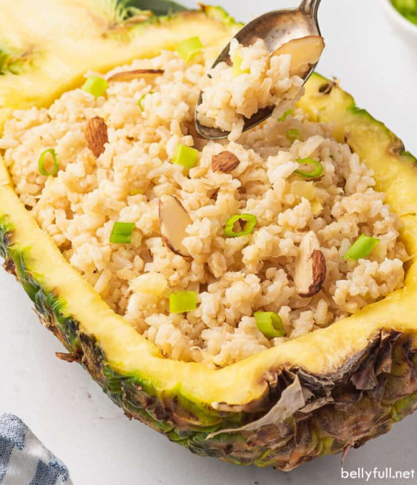

pineapple Rice

Description
Pineapple Coconut Rice is a delicious twist on traditional plain white rice. It’s a creamy and rich, yet mild and light side dish that pairs perfectly with just about any protein and would be super fun for a tropical themed dinner
Ingridents
- 2 cups of rice
- Coconut milk
- 3 bell pepper
- 3 maggi cube
- 1kg chicken
- Pineapple
- Salt
- Soy Sauce
- Sesame oil
- Brown Sugar
Steps
- Rinse the rice several times until the water runs clear. Drain the rice.
-
In a medium pot, over high heat, add the rice, broth, and coconut milk and bring to a boil. Once boiling, turn the heat to low and cover with tight fitting lid; let cook for 15 minutes.
-
Fluff the rice with a fork and mix in the pineapple, soy sauce, sesame oil, brown sugar, and pepper
-
Top with any of the other recommended toppings (below) and drizzle a touch more soy sauce, if desired.